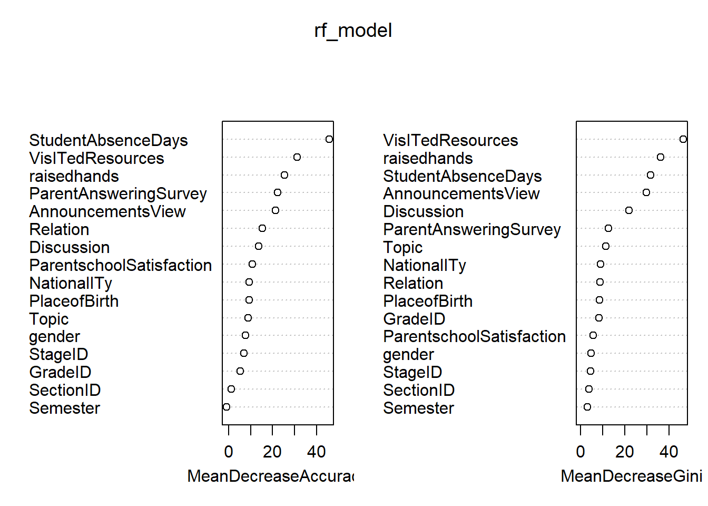

第 5 章 学生成绩水平分类
5.1 数据变量说明
变量说明。
变量中最重要的的为Class学生等级变量，是我们建模的目标变量。
edudata <- read_csv("data/xAPI-Edu-Data.csv")
edudata$Class <- factor(edudata$Class, levels = c("H", "M", "L"))
edudata$gender <- factor(edudata$gender, levels = c("M", "F"))
str(edudata)## spec_tbl_df [480 x 17] (S3: spec_tbl_df/tbl_df/tbl/data.frame)
## $ gender : Factor w/ 2 levels "M","F": 1 1 1 1 1 ..
## $ NationalITy : chr [1:480] "KW" "KW" "KW" "KW" ...
## $ PlaceofBirth : chr [1:480] "KuwaIT" "KuwaIT" "KuwaIT"..
## $ StageID : chr [1:480] "lowerlevel" "lowerlevel""..
## $ GradeID : chr [1:480] "G-04" "G-04" "G-04" "G-0"..
## $ SectionID : chr [1:480] "A" "A" "A" "A" ...
## $ Topic : chr [1:480] "IT" "IT" "IT" "IT" ...
## $ Semester : chr [1:480] "F" "F" "F" "F" ...
## $ Relation : chr [1:480] "Father" "Father" "Father"..
## $ raisedhands : num [1:480] 15 20 10 30 40 42 35 50 12..
## $ VisITedResources : num [1:480] 16 20 7 25 50 30 12 10 21 ..
## $ AnnouncementsView : num [1:480] 2 3 0 5 12 13 0 15 16 25 ...
## $ Discussion : num [1:480] 20 25 30 35 50 70 17 22 50..
## $ ParentAnsweringSurvey : chr [1:480] "Yes" "Yes" "No" "No" ...
## $ ParentschoolSatisfaction: chr [1:480] "Good" "Good" "Bad" "Bad" ..
## $ StudentAbsenceDays : chr [1:480] "Under-7" "Under-7" "Abov"..
## $ Class : Factor w/ 3 levels "H","M","L": 2 2 3 ..
## - attr(*, "spec")=
## .. cols(
## .. gender = col_character(),
## .. NationalITy = col_character(),
## .. PlaceofBirth = col_character(),
## .. StageID = col_character(),
## .. GradeID = col_character(),
## .. SectionID = col_character(),
## .. Topic = col_character(),
## .. Semester = col_character(),
## .. Relation = col_character(),
## .. raisedhands = col_double(),
## .. VisITedResources = col_double(),
## .. AnnouncementsView = col_double(),
## .. Discussion = col_double(),
## .. ParentAnsweringSurvey = col_character(),
## .. ParentschoolSatisfaction = col_character(),
## .. StudentAbsenceDays = col_character(),
## .. Class = col_character()
## .. )
## - attr(*, "problems")=<externalptr>5.2 描述性分析
5.2.1 封装绘图函数
fun_bar <- function(data, xlab, fillc, pos, xname, yname, legend){
data %>%
group_by({{xlab}}) %>% # dplyr中的自定函数参数需要使用{{}}括起来
mutate(count = n()) %>%
ggplot(aes(reorder({{xlab}}, count), count, fill = {{fillc}})) +
geom_col(position = pos) + #pos = "stack" or "fill"
labs(x = xname, y = yname) +
coord_flip() +
theme_bw() +
guides(fill = guide_legend(title = legend))
}5.2.2 不同教育程度的学生选择课程主题
p1 <- fun_bar(data = edudata, xlab = Topic, fillc = StageID,
pos = "stack", xname = "Topic", yname = "Student_Count",
legend = "教育程度")
p2 <- fun_bar(data = edudata, xlab = Topic, fillc = StageID,
pos = "fill", xname = "Topic", yname = "Per_Student_Count",
legend = "教育程度")
p1/p2
图 5.1: 不同教育程度的学生选择课程主题
由图5.1可以看出：
课程主题最多的为IT、French和Arabic，其中选择IT的课程主题的学员远高于其他课。
无论哪种教育程度，IT、Science、Math和English四种课程都是必修的（三种颜色都有）。
5.2.3 不同课程主题监护人情况
这部分主要针对家长的情况进行分析，了解父母对学员学习的不同情况。对应在数据集中的变量为Relation。
p3 <- fun_bar(data = edudata, xlab = Topic, fillc = Relation,
pos = "stack", xname = "Topic", yname = "Student_count",
legend = "监护人情况")
p4 <- fun_bar(data = edudata, xlab = Topic, fillc = Relation,
pos = "fill", xname = "Topic", yname = "Student_count",
legend = "监护人情况")
p3/p4
图 5.2: 不同课程主题监护人情况
由图5.2可以看出：
总体而言，监护人为父亲的较多。其中，IT和Math课程中，负责人为父亲的超过75%。
French课程，监护人大多数为母亲，占70%左右。
5.2.4 不同课程学生学习成绩
p5 <- fun_bar(data = edudata, xlab = Topic, fillc = Class,
pos = "stack", xname = "Topic", yname = "Student_count",
legend = "学生成绩")
p6 <- fun_bar(data = edudata, xlab = Topic, fillc = Class,
pos = "fill", xname = "Topic", yname = "Student_count",
legend = "学生成绩")
p5/p6
图 5.3: 不同课程学生学习成绩
由图5.3:
所有课程中，只有Biology课程中，属于高水平的学生数超过了50%。
在Geology课程中，没有低水平的学生。
5.2.5 不同教室学生成绩水平
p7 <- fun_bar(data = edudata, xlab = SectionID, fillc = Class,
pos = "stack", xname = "Section_ID", yname = "Student_count",
legend = "学生成绩")
p8 <- fun_bar(data = edudata, xlab = SectionID, fillc = Class,
pos = "fill", xname = "Section_ID", yname = "Student_count",
legend = "学生成绩")
p7/p8
图 5.4: 不同教室学生成绩水平
由图5.4可以看出：
在A班的学生最多，C班的学生最少。
C班的低水平成绩的学生相对较多，其它两个班级的成绩水平基本一致。
5.2.6 不同学期、不同成绩水平与监护人的关系
# 封装函数，去掉坐标轴翻转
fun_bar2 <- function(data, xlab, fillc, pos, xname, yname, legend){
data %>%
group_by({{xlab}}) %>% # dplyr中的自定函数参数需要使用{{}}括起来
mutate(count = n()) %>%
ggplot(aes(reorder({{xlab}}, count), count, fill = {{fillc}})) +
geom_col(position = pos) + #pos = "stack" or "fill"
labs(x = xname, y = yname) +
theme_bw() +
guides(fill = guide_legend(title = legend))
}p9 <- fun_bar2(edudata, Semester, Relation, pos = "stack",
xname = "Semester", yname = "Student_count",
legend = "监护人情况")
p10 <- fun_bar2(edudata, Semester, Relation, pos = "fill",
xname = "Semester", yname = "per_Student_count",
legend = "监护人情况")
p11 <- fun_bar2(edudata, Class, Relation, pos = "stack",
xname = "Class", yname = "Student_count",
legend = "监护人情况")
p12 <- fun_bar2(edudata, Class, Relation, pos = "fill",
xname = "Class", yname = "per_Student_count",
legend = "监护人情况")
(p9|p10) / (p11|p12)
图 5.5: 不同学期、不同成绩水平与监护人的关系
由图5.5可知：
第一学期父亲作为监护人的学生数比第二学期多。
总体看，成绩水平较高的学生中，监护人为母亲的比较多；其它水平均是父亲较多。
5.2.7 家长是否回答调查问卷、成绩水平与家长对学校是否满意的关系
p13 <- fun_bar2(edudata, ParentAnsweringSurvey, ParentschoolSatisfaction,
pos = "stack", xname = "ParentAnsweringSurvey",
yname = "Student_count", legend = "是否满意")
p14 <- fun_bar2(edudata, ParentAnsweringSurvey, ParentschoolSatisfaction,
pos = "fill", xname = "ParentAnsweringSurvey",
yname = "Per_Student_count", legend = "是否满意")
p15 <- fun_bar2(edudata, Class, ParentschoolSatisfaction,
pos = "stack", xname = "Class",
yname = "Student_count", legend = "是否满意")
p16 <- fun_bar2(edudata, Class, ParentschoolSatisfaction,
pos = "fill", xname = "Class",
yname = "Per_Student_count", legend = "是否满意")
(p13|p14)/(p15|p16)
图 5.6: 家长是否回答调查问卷、成绩水平与家长对学校是否满意的关系
由图5.6可以看出：
有超过一半的家长回答了问卷，其中，回答问卷的家长大部分对学校满意，而未回答问卷的则大部分对学校不满。
成绩越高，家长对学校越满意。
5.2.8 性别、逃课次数与学生成绩水平的关系
p17 <- fun_bar2(edudata, gender, Class,
pos = "stack", xname = "Gender",
yname = "Student_count", legend = "成绩水平")
p18 <- fun_bar2(edudata, gender, Class,
pos = "fill", xname = "Gender",
yname = "Per_Student_count", legend = "成绩水平")
p19 <- fun_bar2(edudata, StudentAbsenceDays, Class,
pos = "stack", xname = "Class",
yname = "Student_count", legend = "成绩水平")
p20 <- fun_bar2(edudata, StudentAbsenceDays, Class,
pos = "fill", xname = "Class",
yname = "Per_Student_count", legend = "成绩水平")
(p17|p18)/(p19|p20)图 5.7: 性别、逃课次数与学生成绩水平的关系
由图5.7可知：
女生比男生数量少很多，但高水平成绩的人数明显比男生多；中水平成绩男女比例基本持平。
逃课超过7天的的学生基本无法取得好的成绩。
5.2.9 举手次数和参加讨论次数与成绩水平关系
fun_bar3 <- function(data, xlab, ylab, fillc, xname, yname){
data %>%
group_by({{xlab}}) %>%
summarise(Mcount = mean({{ylab}})) %>%
ggplot(aes({{xlab}}, Mcount, fill = {{fillc}})) +
geom_col() +
labs(x = xname, y = yname) +
theme_bw() +
theme(legend.position = "none")
}# edudata$Class <- factor(edudata$Class, c("H", "M", "L"), ordered = TRUE)
p21 <- fun_bar3(data = edudata, xlab = Class, ylab = raisedhands,
fillc = Class, "成绩水平", "平均举手次数" )
p22 <- fun_bar3(data = edudata, xlab = Class, ylab = Discussion,
fillc = Class, "成绩水平", "平均参与讨论次数" )
p21|p22
图 5.8: 举手次数和参加讨论次数与成绩水平关系
由图5.8可知： 举手次数和参与讨论次数越多，成绩水平越高。
5.3 模型建立
5.3.1 回归树模型建立
set.seed(1234)
# 按照数据目标8:2进行分层抽样，返回矩阵形式的抽样索引
index <- createDataPartition(edudata$Class, p = 0.8, list = F)
train <- edudata[index, ]
test <- edudata[-index, ]
# 建立回归树模型
rpart_model <- rpart(Class ~., data = train)
# type = "class"指定预测结果是具体的某个类别
pred_rp <- predict(rpart_model, test[-17], type = "class")
confusionMatrix(pred_rp, test$Class)## Confusion Matrix and Statistics
##
## Reference
## Prediction H M L
## H 18 3 0
## M 9 29 3
## L 1 10 22
##
## Overall Statistics
##
## Accuracy : 0.7263
## 95% CI : (0.6252, 0.8128)
## No Information Rate : 0.4421
## P-Value [Acc > NIR] : 1.882e-08
##
## Kappa : 0.5806
##
## Mcnemar's Test P-Value : 0.05103
##
## Statistics by Class:
##
## Class: H Class: M Class: L
## Sensitivity 0.6429 0.6905 0.8800
## Specificity 0.9552 0.7736 0.8429
## Pos Pred Value 0.8571 0.7073 0.6667
## Neg Pred Value 0.8649 0.7593 0.9516
## Prevalence 0.2947 0.4421 0.2632
## Detection Rate 0.1895 0.3053 0.2316
## Detection Prevalence 0.2211 0.4316 0.3474
## Balanced Accuracy 0.7990 0.7320 0.8614prp(rpart_model)
5.3.2 随机数模型
set.seed(1234)
# importance = T:稍后对变量进行重要性的可视化
rf_model <- randomForest(Class~., data = train, importance = T)
pred_rf <- predict(rf_model, test[-17], type = "class")
confusionMatrix(pred_rf, test$Class) # 混淆矩阵判断模型准确率## Confusion Matrix and Statistics
##
## Reference
## Prediction H M L
## H 20 4 0
## M 8 36 4
## L 0 2 21
##
## Overall Statistics
##
## Accuracy : 0.8105
## 95% CI : (0.7172, 0.8837)
## No Information Rate : 0.4421
## P-Value [Acc > NIR] : 1.886e-13
##
## Kappa : 0.7032
##
## Mcnemar's Test P-Value : NA
##
## Statistics by Class:
##
## Class: H Class: M Class: L
## Sensitivity 0.7143 0.8571 0.8400
## Specificity 0.9403 0.7736 0.9714
## Pos Pred Value 0.8333 0.7500 0.9130
## Neg Pred Value 0.8873 0.8723 0.9444
## Prevalence 0.2947 0.4421 0.2632
## Detection Rate 0.2105 0.3789 0.2211
## Detection Prevalence 0.2526 0.5053 0.2421
## Balanced Accuracy 0.8273 0.8154 0.9057varImpPlot(rf_model) # 可视化变量重要性函数
阅读上图：
圆点越靠近右侧越重要。
我们重点观察排名前五的变量。通过左右两图的对比发现，两图中前四个变量相同（交叉），可以判定这四个变量是数据中最重要的变量。
5.3.3 SVM建模-支持向量机(需要再研究)
set.seed(1234)
library(kernlab) # Kernel-Based Machine Learning Lab
svm_model <- ksvm(Class~., data = test, kernel = "rbfdot")
# type = "response":指定预测结果是具体的某个列别
pred_svm <- predict(svm_model, test[-17], type = "response")
confusionMatrix(pred_svm, test$Class)## Confusion Matrix and Statistics
##
## Reference
## Prediction H M L
## H 23 4 0
## M 5 36 1
## L 0 2 24
##
## Overall Statistics
##
## Accuracy : 0.8737
## 95% CI : (0.7897, 0.933)
## No Information Rate : 0.4421
## P-Value [Acc > NIR] : < 2.2e-16
##
## Kappa : 0.8053
##
## Mcnemar's Test P-Value : NA
##
## Statistics by Class:
##
## Class: H Class: M Class: L
## Sensitivity 0.8214 0.8571 0.9600
## Specificity 0.9403 0.8868 0.9714
## Pos Pred Value 0.8519 0.8571 0.9231
## Neg Pred Value 0.9265 0.8868 0.9855
## Prevalence 0.2947 0.4421 0.2632
## Detection Rate 0.2421 0.3789 0.2526
## Detection Prevalence 0.2842 0.4421 0.2737
## Balanced Accuracy 0.8809 0.8720 0.96575.3.4 模型融合
将各个模型的结果做一个融合（合并至一个数据框）。
result <- data.frame(rpart = pred_rp,
randomForest = pred_rf,
svm = pred_svm,
actual_class = test$Class,
final_pred = rep("-", nrow(test)))
head(result)## rpart randomForest svm actual_class final_pred
## 1 M M M M -
## 2 L L L L -
## 3 L L L L -
## 4 M M L M -
## 5 L L L L -
## 6 M M M M -# 封装求众数函数
fun_pred <- function(x){
names(which.max(table(x)))
}
result$final_pred <- factor(apply(result[1:2], 1, fun_pred))
confusionMatrix(result$actual_class, result$final_pred)## Confusion Matrix and Statistics
##
## Reference
## Prediction H L M
## H 21 1 6
## L 0 23 2
## M 7 10 25
##
## Overall Statistics
##
## Accuracy : 0.7263
## 95% CI : (0.6252, 0.8128)
## No Information Rate : 0.3579
## P-Value [Acc > NIR] : 3.029e-13
##
## Kappa : 0.5887
##
## Mcnemar's Test P-Value : 0.09327
##
## Statistics by Class:
##
## Class: H Class: L Class: M
## Sensitivity 0.7500 0.6765 0.7576
## Specificity 0.8955 0.9672 0.7258
## Pos Pred Value 0.7500 0.9200 0.5952
## Neg Pred Value 0.8955 0.8429 0.8491
## Prevalence 0.2947 0.3579 0.3474
## Detection Rate 0.2211 0.2421 0.2632
## Detection Prevalence 0.2947 0.2632 0.4421
## Balanced Accuracy 0.8228 0.8218 0.7417head(result)## rpart randomForest svm actual_class final_pred
## 1 M M M M M
## 2 L L L L L
## 3 L L L L L
## 4 M M L M M
## 5 L L L L L
## 6 M M M M M5.4 mlr3模型建立
edudata <- read_csv("data/xAPI-Edu-Data.csv", show_col_types = FALSE,
col_types = "fffffffffddddffff")
spec(edudata)## cols(
## gender = col_factor(levels = NULL, ordered = FALSE, include_na = FALSE),
## NationalITy = col_factor(levels = NULL, ordered = FALSE, include_na = FALSE),
## PlaceofBirth = col_factor(levels = NULL, ordered = FALSE, include_na = FALSE),
## StageID = col_factor(levels = NULL, ordered = FALSE, include_na = FALSE),
## GradeID = col_factor(levels = NULL, ordered = FALSE, include_na = FALSE),
## SectionID = col_factor(levels = NULL, ordered = FALSE, include_na = FALSE),
## Topic = col_factor(levels = NULL, ordered = FALSE, include_na = FALSE),
## Semester = col_factor(levels = NULL, ordered = FALSE, include_na = FALSE),
## Relation = col_factor(levels = NULL, ordered = FALSE, include_na = FALSE),
## raisedhands = col_double(),
## VisITedResources = col_double(),
## AnnouncementsView = col_double(),
## Discussion = col_double(),
## ParentAnsweringSurvey = col_factor(levels = NULL, ordered = FALSE, include_na = FALSE),
## ParentschoolSatisfaction = col_factor(levels = NULL, ordered = FALSE, include_na = FALSE),
## StudentAbsenceDays = col_factor(levels = NULL, ordered = FALSE, include_na = FALSE),
## Class = col_factor(levels = NULL, ordered = FALSE, include_na = FALSE)
## )5.4.1 回归树模型
library(mlr3verse)
# 建立任务
set.seed(1234)
task_rp <-
TaskClassif$new(id = "edu_rp", backend = edudata,
target = "Class")
task_rp## <TaskClassif:edu_rp> (480 x 17)
## * Target: Class
## * Properties: multiclass
## * Features (16):
## - fct (12): GradeID, NationalITy, ParentAnsweringSurvey,
## ParentschoolSatisfaction, PlaceofBirth, Relation,
## SectionID, Semester, StageID, StudentAbsenceDays, Topic,
## gender
## - dbl (4): AnnouncementsView, Discussion, VisITedResources,
## raisedhands# 选择学习器
learner_rp <- lrn("classif.rpart")
# 划分测试集和训练集
train_set <- sample(task_rp$nrow, 0.8 * task_rp$nrow)
test_set <- setdiff(seq_len(task_rp$nrow), train_set)
# 模型训练
learner_rp$train(task_rp, row_ids = train_set)
learner_rp$model## n= 384
##
## node), split, n, loss, yval, (yprob)
## * denotes terminal node
##
## 1) root 384 215 M (0.44010417 0.26562500 0.29427083)
## 2) StudentAbsenceDays=Above-7 157 64 L (0.38853503 0.59235669 0.01910828)
## 4) AnnouncementsView>=30.5 62 16 M (0.74193548 0.20967742 0.04838710) *
## 5) AnnouncementsView< 30.5 95 15 L (0.15789474 0.84210526 0.00000000)
## 10) ParentAnsweringSurvey=Yes 25 10 L (0.40000000 0.60000000 0.00000000)
## 20) raisedhands>=15.5 11 3 M (0.72727273 0.27272727 0.00000000) *
## 21) raisedhands< 15.5 14 2 L (0.14285714 0.85714286 0.00000000) *
## 11) ParentAnsweringSurvey=No 70 5 L (0.07142857 0.92857143 0.00000000) *
## 3) StudentAbsenceDays=Under-7 227 117 H (0.47577093 0.03964758 0.48458150)
## 6) Relation=Father 110 40 M (0.63636364 0.08181818 0.28181818)
## 12) VisITedResources< 88.5 82 21 M (0.74390244 0.09756098 0.15853659)
## 24) GradeID=G-07,G-08,G-09,G-12,G-10 47 5 M (0.89361702 0.08510638 0.02127660) *
## 25) GradeID=G-04,G-06,G-11,G-02 35 16 M (0.54285714 0.11428571 0.34285714)
## 50) raisedhands< 37.5 22 7 M (0.68181818 0.18181818 0.13636364) *
## 51) raisedhands>=37.5 13 4 H (0.30769231 0.00000000 0.69230769) *
## 13) VisITedResources>=88.5 28 10 H (0.32142857 0.03571429 0.64285714)
## 26) Topic=IT,Arabic,Science,English,French,History 16 7 M (0.56250000 0.06250000 0.37500000) *
## 27) Topic=Quran,Biology,Chemistry,Geology 12 0 H (0.00000000 0.00000000 1.00000000) *
## 7) Relation=Mum 117 38 H (0.32478632 0.00000000 0.67521368)
## 14) PlaceofBirth=KuwaIT,USA,Jordan,Iran,Morocco,Palestine 93 37 H (0.39784946 0.00000000 0.60215054)
## 28) VisITedResources< 91.5 76 36 H (0.47368421 0.00000000 0.52631579)
## 56) Topic=IT,Arabic,Quran,Spanish,French,Chemistry,Geology 49 19 M (0.61224490 0.00000000 0.38775510)
## 112) gender=M 30 8 M (0.73333333 0.00000000 0.26666667) *
## 113) gender=F 19 8 H (0.42105263 0.00000000 0.57894737) *
## 57) Topic=Science,English,History,Biology 27 6 H (0.22222222 0.00000000 0.77777778) *
## 29) VisITedResources>=91.5 17 1 H (0.05882353 0.00000000 0.94117647) *
## 15) PlaceofBirth=lebanon,Egypt,venzuela,Tunis,Syria,Iraq 24 1 H (0.04166667 0.00000000 0.95833333) *# 模型预测
pred_rp <- learner_rp$predict(task_rp, row_ids = test_set)
pred_rp## <PredictionClassif> for 96 observations:
## row_ids truth response
## 1 M M
## 5 M L
## 7 L L
## ---
## 469 L L
## 470 L L
## 478 M M# 精度
pred_rp$confusion## truth
## response M L H
## M 27 7 12
## L 3 18 0
## H 12 0 17measure <- msr("classif.acc")
pred_rp$score(measure) # 预测精度## classif.acc
## 0.6458333prp(learner_rp$model) # 作图
5.4.2 随机森林模型
# 建立任务
task_rf <- TaskClassif$new(id = "task_rf", backend = edudata,
target = "Class")
# 选择学习器
learner_rf <- lrn("classif.ranger")
# 使用之前设定好的测试集和训练集进行模型训练和预测
learner_rf$train(task_rf, row_ids = train_set)
learner_rf$model## Ranger result
##
## Call:
## ranger::ranger(dependent.variable.name = task$target_names, data = task$data(), probability = self$predict_type == "prob", case.weights = task$weights$weight, num.threads = 1L)
##
## Type: Classification
## Number of trees: 500
## Sample size: 384
## Number of independent variables: 16
## Mtry: 4
## Target node size: 1
## Variable importance mode: none
## Splitrule: gini
## OOB prediction error: 22.40 %pred_rf <- learner_rf$predict(task_rf, row_ids = test_set)
pred_rf## <PredictionClassif> for 96 observations:
## row_ids truth response
## 1 M M
## 5 M L
## 7 L L
## ---
## 469 L L
## 470 L L
## 478 M M# 精度预测
## 建立混淆矩阵
pred_rf$confusion## truth
## response M L H
## M 33 3 7
## L 2 22 0
## H 7 0 22## 设定精度预测方法
measure <- msr("classif.acc")
## 预测精度
pred_rf$score(measure)## classif.acc
## 0.80208335.4.3 支持向量机模型
完善内容
edudata1 <- read_csv(“data/xAPI-Edu-Data.csv”, col_types = ““) str(edudata1)
建立任务 edudata1\(Class <- factor(edudata1\)Class) task_svm <- TaskClassif$new(id = “task_svm”, edudata1, target = “Class”)
选择学习器 learner_svm <- lrn(“classif.svm”)
利用之前确定的训练集训练模型 learner_svm\(train(task_svm, row_ids = train_set) learner_svm\)model